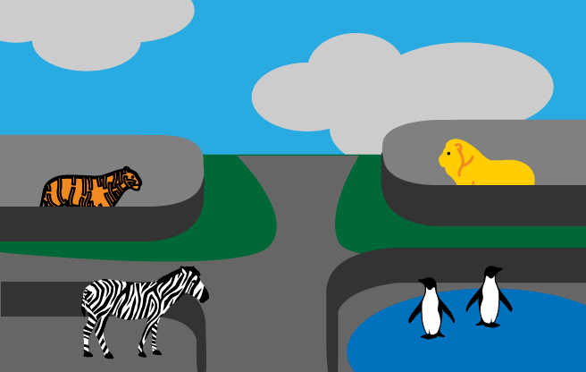

Another essential concept in coding is functions, which allow you to store a piece of code that does a single task inside a defined block, and then call that code whenever you need it using a single short command — rather than having to type out the same code multiple times. In this article we'll explore fundamental concepts behind functions such as basic syntax, how to invoke and define them, scope, and parameters.
| Prerequisites: | Basic computer literacy, a basic understanding of HTML and CSS, JavaScript first steps. |
|---|---|
| Objective: | To understand the fundamental concepts behind JavaScript functions. |
Where do I find functions?
In JavaScript, you'll find functions everywhere. In fact, we've been using functions all the way through the course so far; we've just not been talking about them very much. Now is the time, however, for us to start talking about functions explicitly, and really exploring their syntax.
Pretty much anytime you make use of a JavaScript structure that features a pair of parentheses — () — and you're not using a common built-in language structure like a for loop, while or do...while loop, or if...else statement, you are making use of a function.
Built-in browser functions
We've made use of functions built in to the browser a lot in this course. Every time we manipulated a text string, for example:
var myText = 'I am a string';
var newString = myText.replace('string', 'sausage');
console.log(newString);
// the replace() string function takes a string,
// replaces one substring with another, and returns
// a new string with the replacement made
Or every time we manipulated an array:
var myArray = ['I', 'love', 'chocolate', 'frogs'];
var madeAString = myArray.join(' ');
console.log(madeAString);
// the join() function takes an array, joins
// all the array items together into a single
// string, and returns this new string
Or every time we generated a random number:
var myNumber = Math.random() // the random() function generates a random // number between 0 and 1, and returns that // number
...we were using a function!
Note: Feel free to enter these lines into your browser's JavaScript console to re-familiarize yourself with their functionality, if needed.
The JavaScript language has many built-in functions to allow you to do useful things without having to write all that code yourself. In fact, some of the code you are calling when you invoke (a fancy word for run, or execute) a built in browser function couldn't be written in JavaScript — many of these functions are calling parts of the background browser code, which is written largely in low-level system languages like C++, not web languages like JavaScript.
Bear in mind that some built-in browser functions are not part of the core JavaScript language — some are defined as part of browser APIs, which build on top of the default language to provide even more functionality (refer to this early section of our course for more descriptions). We'll look at using browser APIs in more detail in a later module.
Functions versus methods
One thing we need to clear up before we move on — technically speaking, built in browser functions are not functions — they are methods. This sounds a bit scary and confusing, but don't worry — the words function and method are largely interchangeable, at least for our purposes, at this stage in your learning.
The distinction is that methods are functions defined inside objects. Built-in browser functions (methods) and variables (which are called properties) are stored inside structured objects, to make the code more efficient and easier to handle.
You don't need to learn about the inner workings of structured JavaScript objects yet — you can wait until our later module that will teach you all about the inner workings of objects, and how to create your own. For now, we just wanted to clear up any possible confusion of method versus function — you are likely to meet both terms as your look at the available related resources across the Web.
Custom functions
You've also seen a lot of custom functions in the course so far — functions defined in your code, not inside the browser. Anytime you saw a custom name with parentheses straight after it, you were using a custom function. In our random-canvas-circles.html example (see also the full source code) from our loops article, we included a custom draw() function that looked like this:
function draw() {
ctx.clearRect(0,0,WIDTH,HEIGHT);
for(var i = 0; i < 100; i++) {
ctx.beginPath();
ctx.fillStyle = 'rgba(255,0,0,0.5)';
ctx.arc(random(WIDTH), random(HEIGHT), random(50), 0, 2 * Math.PI);
ctx.fill();
}
}
This function draws 100 random circles inside an <canvas> element. Every time we want to do that, we can just invoke the function with this
draw();
rather than having to write all that code out again every time we want to repeat it. And functions can contain whatever code you like — you can even call other functions from inside functions. The above function for example calls the random() function three times, which is defined by the following code:
function random(number) {
return Math.floor(Math.random()*number);
}
We needed this function because the browser's built-in Math.random() function only generates a random decimal number between 0 and 1. We wanted a random whole number between 0 and a specified number.
Invoking functions
You are probably clear on this by now, but just in case ... to actually use a function after it has been defined, you've got to run — or invoke — it. This is done by including the name of the function in the code somewhere, followed by parentheses.
function myFunction() {
alert('hello');
}
myFunction()
// calls the function once
Anonymous functions
You may see functions defined and invoked in slightly different ways. So far we have just created a function like so:
function myFunction() {
alert('hello');
}
But you can also create a function that doesn't have a name:
function() {
alert('hello');
}
This is called an anonymous function — it has no name! It also won't do anything on its own. You generally use an anonymous function along with an event handler, for example the following would run the code inside the function whenever the associated button is clicked:
var myButton = document.querySelector('button');
myButton.onclick = function() {
alert('hello');
}
The above example would require there to be a <button> element available on the page to select and click. You've already seen this structure a few times throughout the course, and you'll learn more about and see it in use in the next article.
You can also assign an anonymous function to be the value of a variable, for example:
var myGreeting = function() {
alert('hello');
}
This function could now be invoked using:
myGreeting();
This effectively gives the variable a name; you can also assign the function to be the value of multiple variables, for example:
var anotherGreeting = function() {
alert('hello');
}
This function could now be invoked using either of
myGreeting(); anotherGreeting();
But this would just be confusing, so don't do it! When creating functions, it is better to just stick to this form:
function myGreeting() {
alert('hello');
}
You will mainly use anonymous functions to just run a load of code in response to an event firing — like a button being clicked — using an event handler. Again, this looks something like this:
myButton.onclick = function() {
alert('hello');
// I can put as much code
// inside here as I want
}
Function parameters
Some functions require parameters to be specified when you are invoking them — these are values that need to be included inside the function parentheses, which it needs to do its job properly.
Note: Parameters are sometimes called arguments, properties, or even attributes.
As an example, the browser's built-in Math.random() function doesn't require any parameters. When called, it always returns a random number between 0 and 1:
var myNumber = Math.random();
The browser's built-in string replace() function however needs two parameters — the substring to find in the main string, and the substring to replace that string with:
var myText = 'I am a string';
var newString = myText.replace('string', 'sausage');
Note: When you need to specify multiple parameters, they are separated by commas.
It should also be noted that sometimes parameters are optional — you don't have to specify them. If you don't, the function will generally adopt some kind of default behavior. As an example, the array join() function's parameter is optional:
var myArray = ['I', 'love', 'chocolate', 'frogs'];
var madeAString = myArray.join(' ');
// returns 'I love chocolate frogs'
var madeAString = myArray.join();
// returns 'I,love,chocolate,frogs'
If no parameter is included to specify a joining/delimiting character, a comma is used by default.
Function scope and conflicts
Let's talk a bit about scope — a very important concept when dealing with functions. When you create a function, the variables and other things defined inside the function are inside their own separate scope, meaning that they are locked away in their own separate compartments, unreachable from inside other functions or from code outside the functions.
The top level outside all your functions is called the global scope. Values defined in the global scope are accessible from everywhere in the code.
JavaScript is set up like this for various reasons — but mainly because of security and organization. Sometimes you don't want variables to be accessible from everywhere in the code — external scripts that you call in from elsewhere could start to mess with your code and cause problems because they happen to be using the same variable names as other parts of the code, causing conflicts. This might be done maliciously, or just by accident.
For example, say you have an HTML file that is calling in two external JavaScript files, and both of them have a variable and a function defined that use the same name:
<!-- Excerpt from my HTML --> <script src="first.js"></script> <script src="second.js"></script> <script> greeting(); </script>
// first.js
var name = 'Chris';
function greeting() {
alert('Hello ' + name + ': welcome to our company.');
}
// second.js
var name = 'Zaptec';
function greeting() {
alert('Our company is called ' + name + '.');
}
Both functions you want to call are called greeting(), but you can only ever access the second.js file's greeting() function — it is applied to the HTML later on in the source code, so its variable and function overwrite the ones in first.js.
Note: You can see this example running live on GitHub (see also the source code).
Keeping parts of your code locked away in functions avoids such problems, and is considered best practice.
It is a bit like a zoo. The lions, zebras, tigers, and penguins are kept in their own enclosures, and only have access to the things inside their enclosures — in the same manner as the function scopes. If they were able to get into other enclosures, problems would occur. At best, different animals would feel really uncomfortable inside unfamiliar habitats — a lion or tiger would feel terrible inside the penguins' watery, icy domain. At worst, the lions and tigers might try to eat the penguins!

The zoo keeper is like the global scope — he or she has the keys to access every enclosure, to restock food, tend to sick animals, etc.
Active learning: Playing with scope
Let's look at a real example to demonstrate scoping.
- First, make a local copy of our function-scope.html example. This contains two functions called
a()andb(), and three variables —x,y, andz— two of which are defined inside the functions, and one in the global scope. It also contains a third function calledoutput(), which takes a single parameter and outputs it in a paragraph on the page. - Open the example up in a browser and in your text editor.
- Open the JavaScript console in your browser developer tools. In the JavaScript console, enter the following command:
output(x);
You should see the value of variablexoutput to the screen. - Now try entering the following in your console
output(y); output(z);
Both of these should return an error along the lines of "ReferenceError: y is not defined". Why is that? Because of function scope —yandzare locked inside thea()andb()functions, sooutput()can't access them when called from the global scope. - However, what about when it's called from inside another function? Try editing
a()andb()so they look like this:function a() { var y = 2; output(y); } function b() { var z = 3; output(z); }Save the code and reload it in your browser, then try calling thea()andb()functions from the JavaScript console:a(); b();
You should see theyandzvalues output in the page. This works fine, as theoutput()function is being called inside the other functions — in the same scope as the variables it is printing are defined in, in each case.output()itself is available from anywhere, as it is defined in the global scope. - Now try updating your code like this:
function a() { var y = 2; output(x); } function b() { var z = 3; output(x); }Save and reload again, and try this again in your JavaScript console:a(); b();
Both thea()andb()call should output the value of x — 1. These work fine because even though theoutput()calls are not in the same scope asxis defined in,xis a global variable so is available inside all code, everywhere. - Finally, try updating your code like this:
function a() { var y = 2; output(z); } function b() { var z = 3; output(y); }Save and reload again, and try this again in your JavaScript console:a(); b();
This time thea()andb()calls will both return that annoying "ReferenceError: z is not defined" error — this is because theoutput()calls and the variables they are trying to print are not defined inside the same function scopes — the variables are effectively invisible to those function calls.
Note: The same scoping rules do not apply to loop (e.g. for() { ... }) and conditional blocks (e.g. if() { ... }) — they look very similar, but they are not the same thing! Take care not to get these confused.
Note: The ReferenceError: "x" is not defined error is one of the most common you'll encounter. If you get this error and you are sure that you have a defined the variable in question, check what scope it is in.
Functions inside functions
Keep in mind that you can call a function from anywhere, even inside another function. This is often used as a way to keep code tidy — if you have a big complex function, it is easier to understand if you break it down into several sub-functions:
function myBigFunction() {
var myValue;
subFunction1();
subFunction2();
subFunction3();
}
function subFunction1() {
console.log(myValue);
}
function subFunction2() {
console.log(myValue);
}
function subFunction3() {
console.log(myValue);
}
Just make sure that the values being used inside the function are properly in scope. The example above would throw an error ReferenceError: MyValue is not defined, because although the myValue variable is defined in the same scope as the function calls, it is not defined inside the function definitions — the actual code that is run when the functions are called. To make this work, you'd have to pass the value into the function as a parameter, like this:
function myBigFunction() {
var myValue = 1;
subFunction1(myValue);
subFunction2(myValue);
subFunction3(myValue);
}
function subFunction1(value) {
console.log(value);
}
function subFunction2(value) {
console.log(value);
}
function subFunction3(value) {
console.log(value);
}
Conclusion
This article has explored the fundamental concepts behind functions, paving the way for the next one in which we get practical and take you through the steps to building up your own custom function.
See also
- Functions detailed guide — covers some advanced features not included here.
- Functions reference
- Default parameters, Arrow functions — advanced concept references